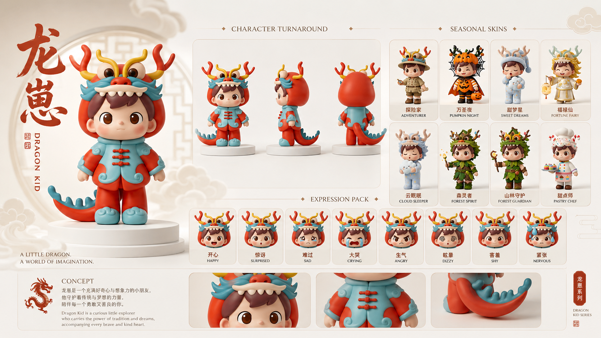
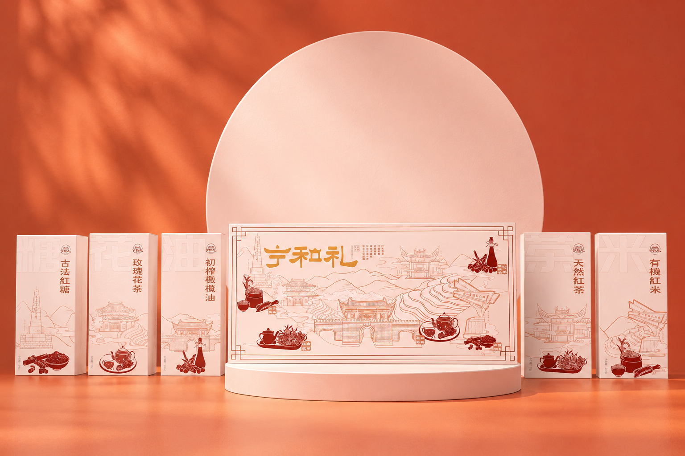
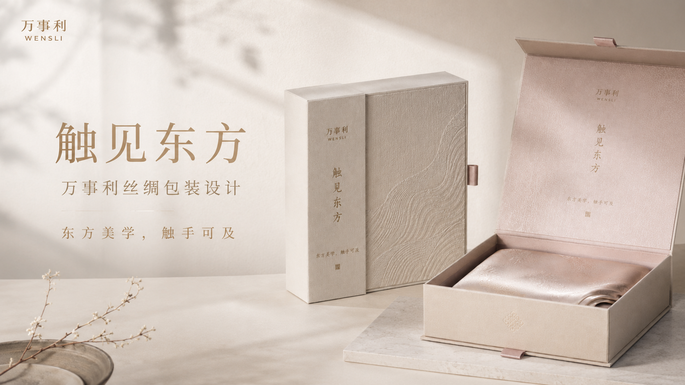
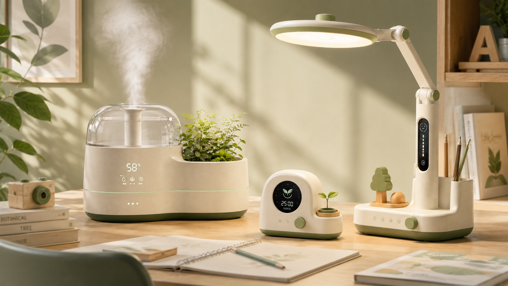
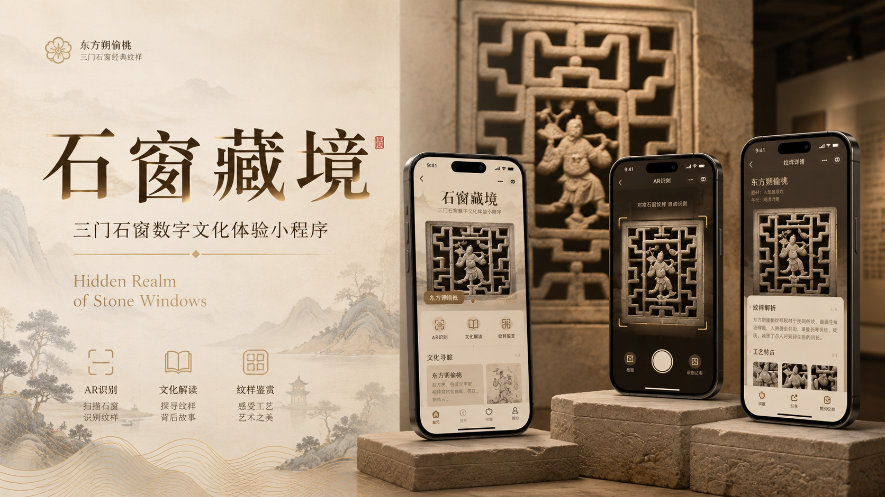
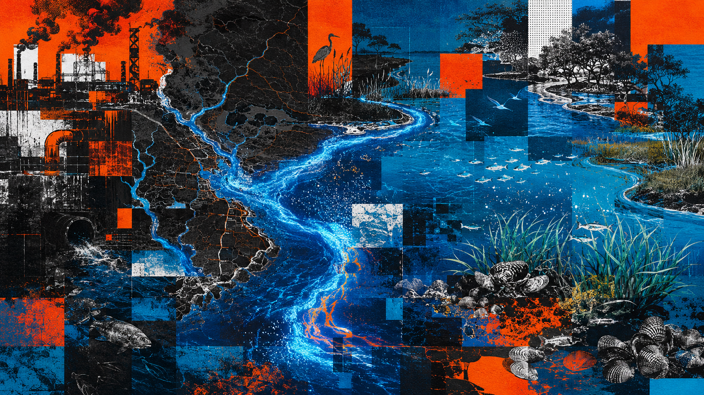

Design Portfolio
IP Design · Packaging Design · Product Design · UI/UX Design · Poster Design
研究生设计作品集，展示 IP 形象设计、文化包装设计、儿童产品系统设计、数字界面设计与生态议题海报设计。
Overview
本作品集围绕文化转译、视觉叙事、产品系统与数字交互展开，包含 IP 形象设计、包装设计、儿童产品系统设计、小程序界面设计与生态议题海报设计。
作品通过 AI 辅助生成、视觉系统构建和场景化展示，探索设计在文化传播、产品体验和公共议题表达中的可能性。
作品通过 AI 辅助生成、视觉系统构建和场景化展示，探索设计在文化传播、产品体验和公共议题表达中的可能性。

设计专业研究生
关注文化转译、视觉叙事、产品系统、数字交互与 AI 辅助设计方法。
关注文化转译、视觉叙事、产品系统、数字交互与 AI 辅助设计方法。
01 / IP Character Design

龙 IP 形象设计
《龙宝 Dragon Boy》是一个以中国龙文化为灵感的原创潮玩 IP 形象设计。
View Project ➝02 / Packaging Design

宁和礼包装设计
《宁和礼》农产品礼盒包装设计，结合地方建筑与东方礼赠美学。
View Project ➝
丝绸礼盒包装设计
《触见东方》丝绸礼盒设计，表现丝绸产品的精致感和礼赠属性。
View Project ➝03 / Product & Interaction Design

儿童自然学习产品
《光芽 Grow Light》面向儿童学习场景的自然学习桌面产品系统设计。
View Project ➝
石窗小程序设计
《石窗》文化导览小程序，探索地方文化的数字化传播方式。
View Project ➝04 / Visual & Information Design

海洋海报设计
《蓝色幻象》蓝眼泪生态危机叙事海报设计，探讨自然奇观与生态预醒。
View Project ➝